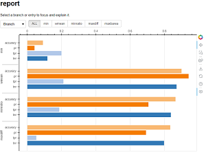
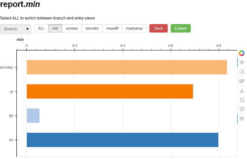
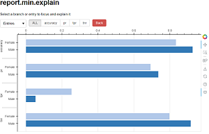
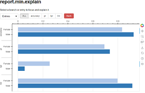
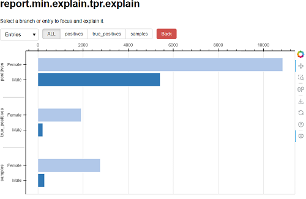

Interactive visualization
Interactive visualization explores
complex objects generated with FairBench, such as
comparison of report value explanations,
or of different algorithms. This is done with a user interface
that lets you navigate between various perspectives (see below).
The same exploration can be performed programmatically.
Perspectives
To delve into complicate comparisons between
subgroups, you need to understand the concept
of report perspectives. Viewing all values stored in a branch
is one perspective (e.g., report.min to view
assessments for the worst metric values for that
branch).
But you can also obtain other perspectives, like viewing
all values for the same entry in all branches
(e.g., report.tpr to view true positive
rates across all branches).
Perspectives are equivalent to a combination of
tensor access alongside a specific dimension.
Info
Perspectives as a programming pattern arise from
FairBench's
concurrent execution
principle on fork membership access
and a Forklike datatype used internally. The latter is a
dictionary whose elements can also be accessed like class members.
Code-based exploration
Info
This paragraph is under construction.
Branch explanations
Info
This paragraph is under construction.
Algorithm comparison
To compare the same type of reports produced by two different algorithms, you need to create a fork with the reports as its branches. In the example below, we use pygrank to run a normal pagerank algorithm and a fairness-aware adaptation for node recommendation. Any number of algorithms can be assessed with a FairBench reporting mechanism and combined into a fork. In this case, the mechanism of choice is the multireport, used with arguments needed to assess recommendation outcomes. At the end, a fork is created and, although it can be too complicated to show in one figure or table, you can obtain any perspective and visualize that. For example, the snippet below prints a table in the console that compares algorithms in terms of various base auc measure reductions.
import pygrank as pg
import fairbench as fb
"""load data and set sensitive attribute"""
_, graph, communities = next(pg.load_datasets_multiple_communities(["highschool"]))
train, test = pg.split(pg.to_signal(graph, communities[0]), 0.5)
sensitive_signal = pg.to_signal(graph, communities[1])
labels = test.filter(exclude=train)
sensitive = fb.Fork(gender=fb.categories@sensitive_signal.filter(exclude=train))
"""create report for pagerank"""
algorithm = pg.PageRank(alpha=0.85)
scores = algorithm(train).filter(exclude=train)
report = fb.multireport(labels=labels, scores=scores, sensitive=sensitive)
"""create report for locally fair pagerank"""
fair_algorithm = pg.LFPR(alpha=0.85, redistributor="original")
fair_scores = fair_algorithm(train, sensitive=sensitive_signal).filter(exclude=train)
fair_report = fb.multireport(labels=labels, scores=fair_scores, sensitive=sensitive)
"""combine both reports into one and get the auc perspective"""
fork = fb.Fork(ppr=report, lfpr=fair_report)
fb.describe(fork.auc)
Metric ppr lfpr
min 0.680 0.589
wmean 0.780 0.743
minratio 0.792 0.681
maxdiff 0.178 0.276
maxbarea 0.169 0.262
Start visualization
To start interactive visualization, call the snippet below on an object that is a dictionary or fork. The call shows the default values for optional arguments, which set a report name to be displayed and whether plots should be horizontally or vertically aligned. Horizontal alignment lets figures remain comprehensive during complex intersectional analysis.
import fairbench as fb
obj = ... # the object to explore (e.g., a report)
fb.interactive(obj, name="report", horizontal=True)
When run in a console, the above code will start a bokeh server that hosts a dynamic web page and will open the latter as a tab in your local browser (hard-terminate the process with ctrl+C to stop the server). When run in a Jupyter environment, a bokeh application will start on the next output cell instead.
Info
When Jupyter runs on its non-default port,
add a respective argument (e.g., port=8889)
to interactive visualization to set appropriate permissions.
Interface
Interactive visualization starts from the top level of forks/reports and looks like the figures below. Figures will appear only if data objects can be visualized. The first menu option over the figure controls whether to explore data by branches or entries. In the example below, this means by reduction strategy over subgroups or performance metric.


You can focus on a specific branch or entry by clicking on its name on buttons over the figure. This will generate the appropriate perspective, as shown below. Two new options are added: a button to go back to the previous perspective and an button to create an explanation perspective. This last button appears only when you focus on specific branches or entries. The current perspective always appears on the top. Currently, we are investigating the minimum reduction strategy of the report. Hover over a bar to view its exact values.

Let us now view the explanations of what quantities have led to computing the values of the current figure by clicking on the explain button. The report we are exploring (multireport) performs reduction on the outcome of performance metrics on each sensitive attribute branch, i.e., sensitive attribute dimension. Thus, explanations consist of metric outcomes. Similarly to before, you can switch between showing branches and entries of explanation values.
 

Tip
FairBench keeps track of metadata when computing base performance
metrics, and you can eventually view them and compare them
from within interactive visualization as explanations. For example,
below is the explanation for ''true positive rates of the minimum
reduction's explanation'', as indicated by reading the perspective's
title report.min.explain.tpr.explain from end to start.
By looking at base metric explanations, you can get a feel
for raw data properties and corresponding systemic, societal,
or data gathering issues
that eventually give rise to bias.
